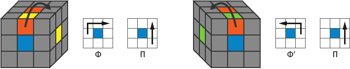
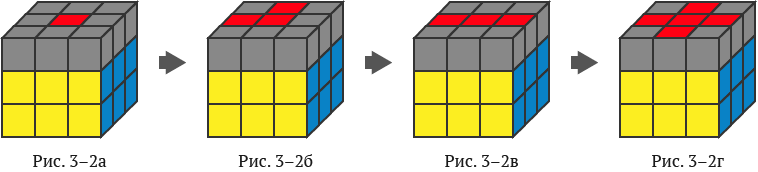

Как собрать кубик Рубика 3х3
Оглавление:
Расшифровка букв на формулах
- Ф / Ф' — поворот передней (фронтальной) стороны по часовой стрелке / против часовой
- В / В' — поворот верхней стороны влево / вправо
- Н / Н' — поворот нижней стороны вправо / влево
- П / П' — поворот правой стороны вверх / вниз
- Л / Л' — поворот левой стороны вниз / вверх
Шаг 1. Собрать первую сторону кубика Рубика
В этом шаге подробно описано, как нужно собирать одну (первую) сторону кубика Рубика с первым поясом. Возможных вариантов на этом шаге много, поэтому описать их все затруднительно. Рекомендуется не запоминать формулы, а понять их суть, тогда вы сможете, справиться с любой ситуацией.
1.1. Объемный крест первой стороны
На одной из сторон кубика соберем крест, цвета которого соответствуют центральным квадратам других сторон (Рис. 1–1б).
Действие 1. Найдите подходящий реберный кубик (Рис. 1–2) и вращайте фронтальную сторону, чтобы этот кубик переместился вверх (Рис. 1–3). Затем переходите к действию 2. Выполните действия 1 и 2 необходимое количество раз.
Если вращение «сломает» уже собранный кубик, переместите найденный кубик в другую плоскость (Рис. 1–4а, б). Если кубик еще не наверху, снова перейдите к действию 1.
Если перемещение в другую плоскость также «сломает» уже собранный кубик, воспользуйтесь соответствующей формулой (Рис. 1–4в).
На рисунке (Рис. 1–4в) показан только один из возможных вариантов — действуйте по аналогии.

Действие 2. Когда найденный кубик перемещен вверх, воспользуйтесь одной из формул

1.2. Сторона и пояс

Чтобы убрать неправильный угловой кубик, используйте формулы.
Если кубик «спрятался» внизу, то перемещаем его в нижний пояс, чтобы потом переместить на свое место, используя формулы выше.
Шаг 2. Собрать второй пояс
Второй пояс легко собирается при помощи двух формул. Найдите подходящий кубик в третьем поясе, чтобы подходили оба цвета (если нужно покрутите третий пояс), и переместите его по диагонали во второй пояс, используя формулы.
Формула: (Н’П’НП)(НФН’Ф’)
Формула: (НЛН’Л’)(Н’Ф’НФ)
Если нет подходящего кубика
Если нет ни одного подходящего кубика, используя эти же формулы, переместите любой кубик из третьего пояса во второй – нужный кубик появится.
Шаг 3. Крест на противоположной стороне
Теперь нужно собрать крест на противоположной стороне кубика Рубика. Крест собирается без учета цветов третьего пояса (Рис. 3–1). Другими словами, на этом шаге собирается только крест, а согласуется крест с цветами третьего пояса уже на следующем шаге.
На вашем кубике Рубика сейчас одна из четырех комбинаций: а, б, в, г - см. Рис. 3–2. Переход от одной комбинации к другой происходит единой формулой: Ф П В П' В' Ф'. Эту формулу вам нужно повторить 1-3 раза в зависимости от того какая у вас комбинация.
Если крест уже собран (Рис. 3–2г), пропустите этот шаг. Если у вас только один центральный квадрат (Рис. 3–2а), тогда вам нужно повторить формулу 3 раза. Если угол (Рис. 3–2б) — 2 раза. Если линия (Рис. 3–2в) — 1 раз.

Формула: Ф П В П' В' Ф'
Обратите внимание
Перед каждым выполнением формулы кубик Рубика нужно расположить в точности, как показано на рисунках.
Шаг 4. Согласованный крест
В результате этого шага мы получим крест, согласованный с цветами пояса *Рис. 4–2в*.
Вращайте верхний пояс, пока 2 цвета креста не совпадут со средними квадратами верхнего пояса *Рис. 4–1*. Возможны только две комбинации: цвета совпали линией Рис. 4–2а* или цвета совпали углом *Рис. 4–2б*.
Формула при совпадении линии: П В П' В П ВВ П'
Перемещаем неправильно размещенные кубики креста, расположенные друг против друга (два противоположных конца креста).
После выполнения этой формулы опять вращайте верхний пояс, пока 2 цвета не совпадут со средними квадратами верхнего пояса (Рис. 4–1). Обращаем внимание, что и сейчас два конца креста не встанут на свои места, но комбинация изменится на «цвета совпали углом» (Рис. 4–2б).
Формула при совпадении угла: П В П' В П ВВ П' В
Меняем местами неправильно размещенные кубики креста, расположенные по диагонали относительно друг друга (два смежные кубика креста).
После выполнения этой формулы крест будет собран и его боковые цвета будут совпадать с цветами верхнего пояса (Рис. 4–2в). Если результат не достигнут, то повторите этот шаг еще раз, предварительно правильно сориентировав кубик.
Шаг 5. Расстановка угловых кубиков
Угловые кубики расставляются двумя формулами. После применения этих формул угловые кубики будут стоять на своих местах (в своих углах), но могут быть развернуты неправильно. На Рис. 5–1 черной точкой отмечен кубик, который размещен на своем месте (в своем углу), но развернут неправильно. Разворачиваются кубики уже на следующем шаге.
Формула правого разворота: (П’Ф’Л’Ф)(ПФ’ЛФ)
Формула левого разворота: (Ф’Л’ФП’)(Ф’ЛФП)
Шаг 6. Разворот угловых кубиков
Разворот всех угловых кубиков выполняется простой формулой П’Н’ПН, выполненной множество раз. Перед тем, как начать, внимательно прочитайте весь раздел до конца и убедитесь, что у вас не осталось вопросов.
Обратите внимание
После начала выполнения формулы кубик Рубика «разрушится» и окончательно соберется, только после того, как все угловые кубики будут правильно развернуты. Другими словами, все угловые кубики разворачиваются за одну операцию, которая потребует от вас внимательности и выдержки.
Найдем угловой кубик, который нужно развернуть (против или по часовой стрелке — не важно), см. Рис. 6–1.
Возьмите кубик Рубика, как показано на рисунке ниже, и выполните формулу.
Обратите внимание
1. Формулу (из 8 ходов) нужно выполнить 1 или 2 раза, до тех пор, пока угловой кубик не перевернется в правильную позицию (Рис. 6–2б).
2. Когда угловой кубик повернется в правильную позицию кубик Рубика «разрушится» — не переживайте, кубик Рубика соберется, только когда вы закончите со всеми углами.
3. Не меняйте положение (не переворачивайте) кубик Рубика в руках до конца этого шага.
Когда первый угловой кубик уже правильно расположен (Рис. 6–2б), поверните верхний слой (Рис. 6–3а), чтобы в верхний правый угол переместился следующий угловой кубик (Рис. 6–3б). Если следующий угловой кубик уже повернут правильно (не требует разворота), сделайте еще один поворот верхнего слоя (Рис. 6–3а).
Опять выполните формулу из 8-ми ходов (1 или 2 раза) и следуйте всем вышеуказанным рекомендациям. Эти действия нужно повторять до тех пор, пока все углы не будут развернуты правильно – пока кубик Рубика не соберется целиком.
Желаю терпения и успехов!